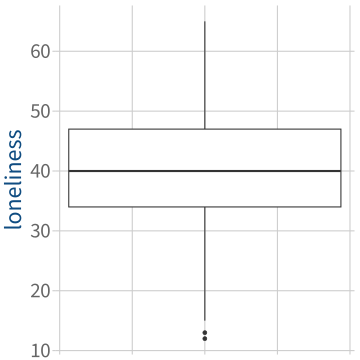
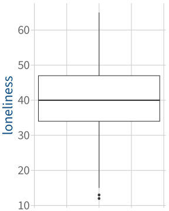
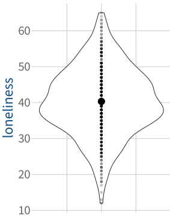
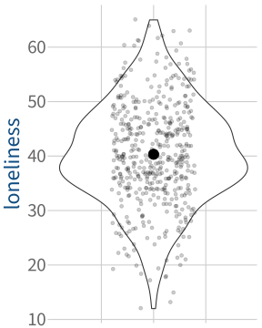
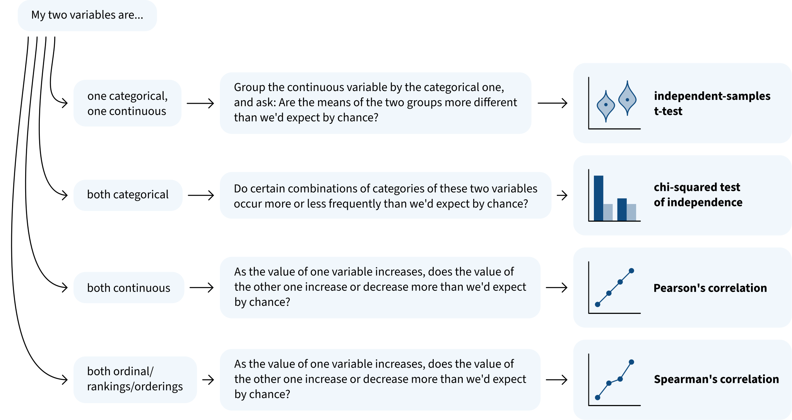

lonely_data |>ggplot(aes(y = loneliness)) +geom_boxplot() +# the theme() bit below removes the uninformative x axis numberingtheme(axis.ticks.x =element_blank(),axis.text.x =element_blank(),axis.title.x =element_blank() )

A few ways to visualise this data
Box plot:
Code
lonely_data |>ggplot(aes(y = loneliness)) +geom_boxplot() +# the theme() bit below removes the uninformative x axis numberingtheme(axis.ticks.x =element_blank(),axis.text.x =element_blank(),axis.title.x =element_blank() )

Violin plot with mean and stacked data points:
Code
lonely_data |>ggplot(aes(x =1, y = loneliness)) +geom_violin() +# add violingeom_point( # add pointsalpha =0.2, # make points 20% opaque ) +stat_summary(fun = mean, geom ='point', size =5) +# add big point for mean# the theme() bit below removes the uninformative x axis numberingtheme(axis.ticks.x =element_blank(),axis.text.x =element_blank(),axis.title.x =element_blank() )

Violin plot with mean and jittered data points:
Code
lonely_data |>ggplot(aes(x =1, y = loneliness)) +geom_violin() +# add violingeom_jitter( # add points with jitter (random horizontal offset)width =0.2, # how big is the max horizontal offset?alpha =0.2, # make the points 20% opaque ) +stat_summary(fun = mean, geom ='point', size =5) +# add big point for mean# the theme() bit below removes the uninformative x axis numberingtheme(axis.ticks.x =element_blank(),axis.text.x =element_blank(),axis.title.x =element_blank() )

Best practice: make plots that show all the data points and also usefully summarise their distribution.
(This is why Elizabeth likes violin + points plots more than box plots.)
From RQ to hypotheses
RQ: Based on the 20-item UCLA Loneliness Scale, do college students report loneliness above the “low loneliness” threshold of 34?
The null hypothesis \(H_0\) is always that there’s no difference, no effect, nothing interesting going on:
There’s no difference between the mean loneliness of college students (\(\mu\)) and 34.
Formally:
\[
H_0 : \mu = 34
\]
For the alternative hypothesis \(H_1\), we need to decide:
Is our RQ directional? (Do we expect a specific direction to the effect?)
If our RQ is directional, which alternative hypothesis matches the direction of the effect we expect to see?
\[
H_1 : \mu > 34
\]
\[
H_1 : \mu < 34
\]
How do we test our research question?
RQ: Based on the 20-item UCLA Loneliness Scale, do college students report loneliness above the “low loneliness” threshold of 34?
A hypothesis test has five parts:
(1) The null hypothesis \(H_0\)
College students’ mean loneliness \(\mu\) is exactly equal to 34.
\[
H_0 : \mu = 34
\]
(2) The alternative hypothesis \(H_1\)
College students’ mean loneliness \(\mu\) is above the threshold of 34.
\[
H_1 : \mu > 34
\]
(3) The test statistic
For testing a mean, we use the t-statistic.
The t-statistic measures how many SEs away from the hypothesised mean (34) the observed sample mean is.
It answers the question: How much does the observed data differ from what we would expect if the H0 were true?
(4) The significance level \(\alpha\)
What % of the time do we accept that we will incorrectly reject the H0, even if it is actually true? (Typically \(\alpha = .05\).)
(5) The p-value
Assuming the H0 is true, how probable is it that we would obtain a test statistic at least as extreme as the one we calculated in Step 3?
Run Steps 3, 4, 5 in R
lonely_t <-t.test( lonely_data$loneliness, # take the loneliness column of lonely_datamu =34, # compare it to the reference value of 34alternative ="greater", # alternative hypothesis: mu is *greater* than 34conf.level = .95# confidence level is 1 minus alpha, so 1 – .05)
lonely_t
One Sample t-test
data: lonely_data$loneliness
t = 15, df = 486, p-value <2e-16
alternative hypothesis: true mean is greater than 34
95 percent confidence interval:
39.6 Inf
sample estimates:
mean of x
40.3
A visual intuition for Steps 3, 4, 5
data: lonely_data$loneliness
t = 15, df = 486, p-value <2e-16
alternative hypothesis: true mean is greater than 34
95 percent confidence interval:
39.6 Inf
sample estimates:
mean of x
40.3
How would we report this analysis?
We wanted to find out whether college students score above the threshold for “low loneliness” on the UCLA Loneliness scale, which is 34. At the 5% significance level, we performed a one-sided test of significance against the null hypothesis that college students’ loneliness is equal to 34. The results indicate that the mean loneliness for college students, 40.3, is significantly higher than the “low loneliness” threshold of 34 (\(t\)(486) = 15, \(p\) < .001, one-tailed).
APA notation format for reporting the key inferential values:
\(t\)([degrees of freedom]) = [t-statistic], \(p\) = [p-value], [one-tailed/two-tailed]
The one-sample t-test is only valid if three things are true
The one-sample t-test is only valid if three things are true
Data requirements:
The variable is numeric.
Assumption of independence:
The obtained sample data are a random sample from the population of interest.
Assumption of normality:
EITHER the population follows a normal distribution OR the sample size \(\geq\) 30.
What if one or more of these things isn’t true?
Then you shouldn’t use a one-sample t-test to analyse your data.
Instead, use a test called the “Wilcoxon Signed-Rank Test”. (We aren’t covering it in DAPR, so you don’t need to know anything more about it than this!)
How do we check each requirement/assumption?
Data requirements for a one-sample t-test
The variable is numeric.
Look at the data and make sure that the variable we’re analysing represents interval, ratio, or integer data.
Assumption of independence for a one-sample t-test
The obtained sample data are a random sample from the population of interest.
Before generalising the conclusion of our test to some population, we need to first make sure that our sample was randomly selected from that population.
This is more of a study design issue, not something we can test directly.
But we can at least double-check that each observation comes from a different person.
EITHER the population follows a normal distribution OR the sample size \(\geq\) 30.
Backstory: All our formulas for confidence intervals and hypothesis tests are built around the assumption that the sampling distribution of the sample mean is normally distributed.
When is the sample mean’s sampling distribution normally distributed?
When either one of these is true:
The population follows a normal distribution (no matter what size the sample is), or
Our sample size is greater than 30 (no matter how the population data is distributed)
Why 30?
Think back to the Central Limit Theorem in Semester 1: after we’ve sampled about 30 observations, the sampling distribution of sample means will become sufficiently normal
Check the sample size
Check the sample size:
nrow(lonely_data)
[1] 487
Are you satisfied that this assumption is met via a large enough sample size?
One way to check the population distribution: Plot the sample (1)
We don’t know how the population is distributed, but if our sample is approximately normally distributed, then the population probably is too.
Another way to check normality of the population distribution: Shapiro-Wilk test
The Shapiro-Wilk test is a hypothesis test where:
\(H_0\): The population data follow a normal distribution
\(H_1\): The population data do not follow a normal distribution
We don’t want to reject this H0, so we want a non-significant result!
shapiro.test(lonely_data$loneliness)
Shapiro-Wilk normality test
data: lonely_data$loneliness
W = 1, p-value = 0.3
Are you satisfied that this assumption is met via normality of the sample distribution?
Reporting the Shapiro-Wilk test
We performed a Shapiro-Wilk test against the null hypothesis of normality of the population data. Based on the sample, we could not reject the null hypothesis of normality in the population (\(W\) = 1, \(p\) = .3).
APA notation format for the Shapiro-Wilk test:
\(W\) = [test statistic], \(p\) = [p-value]
Recap: Assumption of normality for a one-sample t-test
EITHER the population follows a normal distribution OR the sample size \(\geq\) 30.
To check if the sample size is greater than 30:
Count the observations in your dataset
To check if the population follows a normal distribution:
Plot the sample:
Histogram or density plot
Q-Q plot
Run a Shapiro-Wilk test (you want a non-significant result!)
What’s the rest of Block 3 about?
What’s the rest of Block 3 about?
Over the next several weeks, we’ll use the tools you’ve gained so far to explore how psychologists answer different kinds of research questions.
So far in DAPR1, you’ve been looking at just one variable at a time.
But in psychological research, most RQs are about the associations between variables.
So that’s our focus for the next five weeks:
Common ways to statistically test whether the relationship between two variables is different from what we would expect by chance.
The assumptions/requirements of each test and how to check them.
What you’ll learn about in the next four weeks

What questions do you have right now?
Back matter
Revisiting this week’s learning objectives
What kind of test do we use to compare a variable’s mean to a specific value?
a one-sample t-test
What does this test require/assume to be true about the data that it models?
dependent variable is numeric;
variable is normally distributed OR sample size \(\geq\) 30;
observations are sampled independently
How do we check whether we’re satisfied with the test’s requirements/assumptions?
check that variable is on interval/ratio/integer scale
visually with plots (histogram, density plot, Q-Q plot), statistically with Shapiro-Wilk
check that each data point comes from a separate source (e.g., a separate person)
Block 3 skills involved in this week’s lecture and/or workshop
V3: I can appropriately describe patterns of data shown in a plot.
A4: I can check the assumptions underlying basic statistical tests.
A6: I can implement a given statistical test.
I5: I can identify whether I can or cannot reject the null hypothesis.
I7: I can define appropriate null and alternative hypotheses for a given research question.
C1: I can describe the steps taken in a given analysis.
C2: I can describe in writing the results of a given basic statistical test.